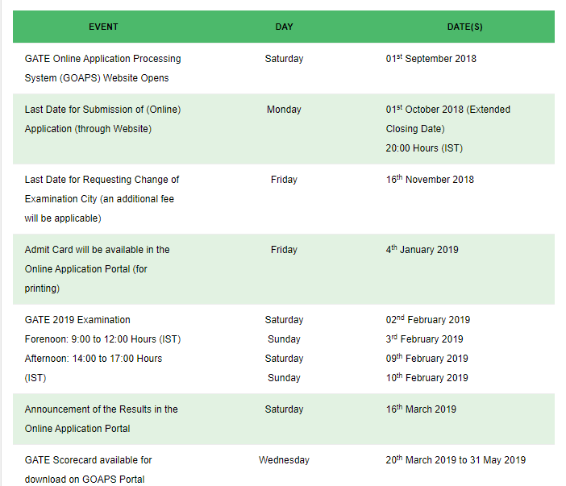

- HOME
- COMPUTER SCIENCE
- TECHNOLOGY FACT
- SCIENCE FACT
- MOTIVATION
GATE
GATE CS 2019 important dates and links
- IIT Madras will organize Graduate Aptitude Test in Engineering (GATE) 2019 Examination. There are total 23 branches in GATE exam.
- These are official date(s) of the respective event of the GATE 2019 exam:

Important Links:
TO GO BACK click here